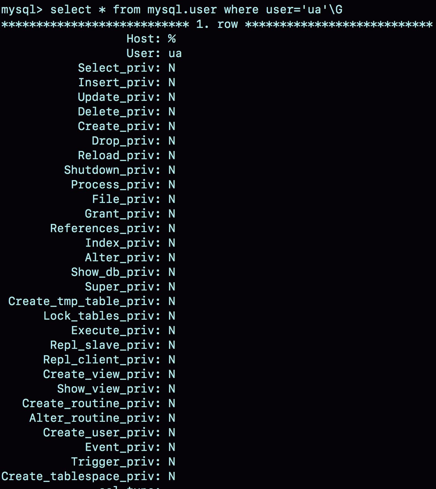
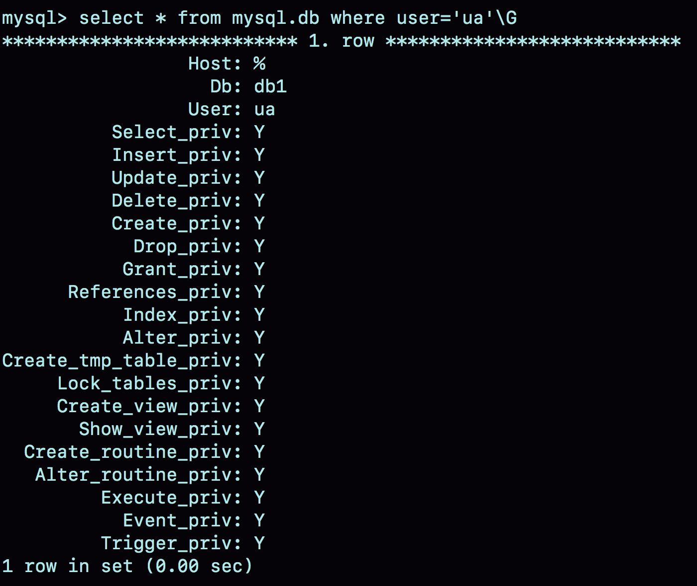
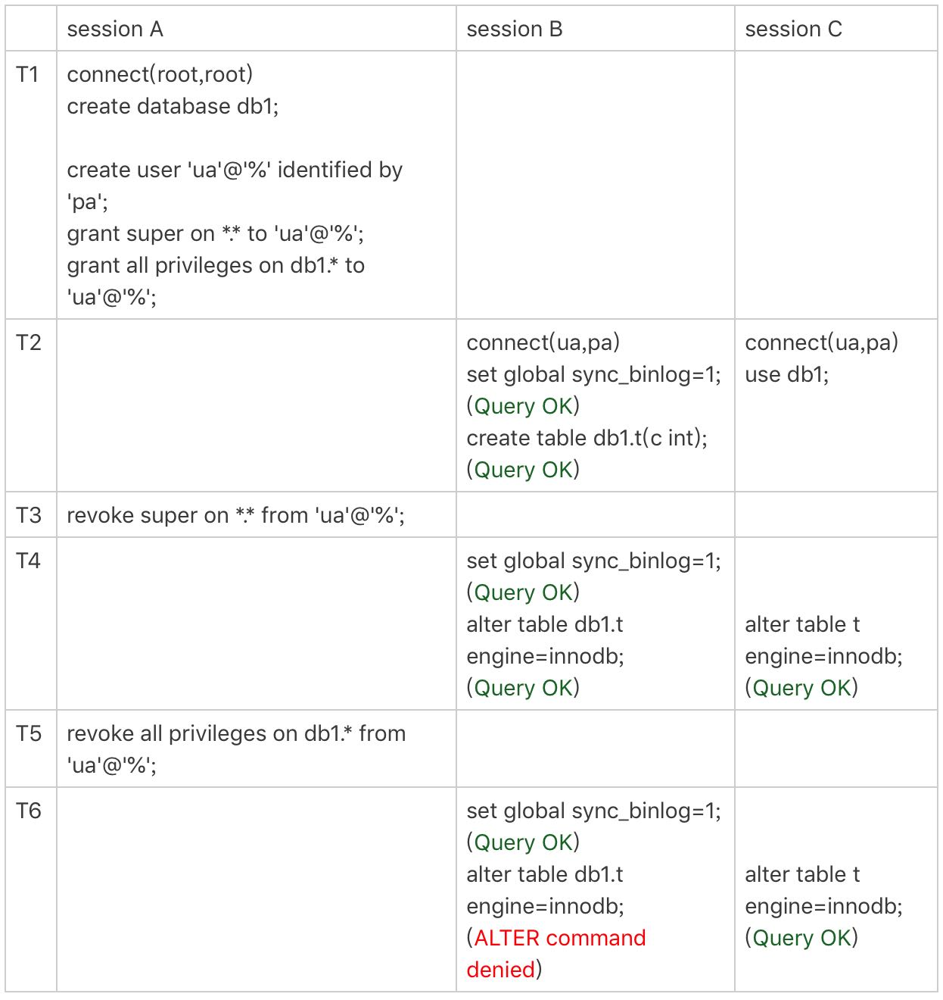
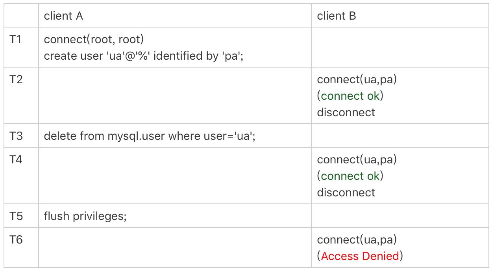
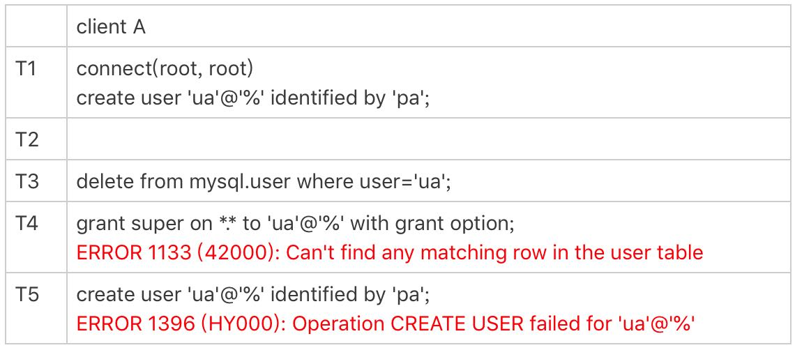

在MySQL里面，grant语句是用来给用户赋权的。不知道你有没有见过一些操作文档里面提到，grant之后要马上跟着执行一个flush privileges命令，才能使赋权语句生效。我最开始使用MySQL的时候，就是照着一个操作文档的说明按照这个顺序操作的。
那么，grant之后真的需要执行flush privileges吗？如果没有执行这个flush命令的话，赋权语句真的不能生效吗？
接下来，我就先和你介绍一下grant语句和flush privileges语句分别做了什么事情，然后再一起来分析这个问题。
为了便于说明，我先创建一个用户：
create user 'ua'@'%' identified by 'pa';
这条语句的逻辑是创建一个用户’ua’@’%’，密码是pa。注意，在MySQL里面，用户名(user)+地址(host)才表示一个用户，因此 ua@ip1 和 ua@ip2代表的是两个不同的用户。
这条命令做了两个动作：
磁盘上，往mysql.user表里插入一行，由于没有指定权限，所以这行数据上所有表示权限的字段的值都是N；
内存里，往数组acl_users里插入一个acl_user对象，这个对象的access字段值为0。
图1就是这个时刻用户ua在user表中的状态。

图1 mysql.user 数据行在MySQL中，用户权限是有不同的范围的。接下来，我就按照用户权限范围从大到小的顺序依次和你说明。
全局权限
全局权限，作用于整个MySQL实例，这些权限信息保存在mysql库的user表里。如果我要给用户ua赋一个最高权限的话，语句是这么写的：
grant all privileges on *.* to 'ua'@'%' with grant option;
这个grant命令做了两个动作：
磁盘上，将mysql.user表里，用户’ua’@’%'这一行的所有表示权限的字段的值都修改为‘Y’；
内存里，从数组acl_users中找到这个用户对应的对象，将access值（权限位）修改为二进制的“全1”。
在这个grant命令执行完成后，如果有新的客户端使用用户名ua登录成功，MySQL会为新连接维护一个线程对象，然后从acl_users数组里查到这个用户的权限，并将权限值拷贝到这个线程对象中。之后在这个连接中执行的语句，所有关于全局权限的判断，都直接使用线程对象内部保存的权限位。
基于上面的分析我们可以知道：
grant 命令对于全局权限，同时更新了磁盘和内存。命令完成后即时生效，接下来新创建的连接会使用新的权限。
对于一个已经存在的连接，它的全局权限不受grant命令的影响。
需要说明的是，一般在生产环境上要合理控制用户权限的范围。我们上面用到的这个grant语句就是一个典型的错误示范。如果一个用户有所有权限，一般就不应该设置为所有IP地址都可以访问。
如果要回收上面的grant语句赋予的权限，你可以使用下面这条命令：
revoke all privileges on *.* from 'ua'@'%';
这条revoke命令的用法与grant类似，做了如下两个动作：
磁盘上，将mysql.user表里，用户’ua’@’%'这一行的所有表示权限的字段的值都修改为“N”；
内存里，从数组acl_users中找到这个用户对应的对象，将access的值修改为0。
db权限
除了全局权限，MySQL也支持库级别的权限定义。如果要让用户ua拥有库db1的所有权限，可以执行下面这条命令：
grant all privileges on db1.* to 'ua'@'%' with grant option;
基于库的权限记录保存在mysql.db表中，在内存里则保存在数组acl_dbs中。这条grant命令做了如下两个动作：
磁盘上，往mysql.db表中插入了一行记录，所有权限位字段设置为“Y”；
内存里，增加一个对象到数组acl_dbs中，这个对象的权限位为“全1”。
图2就是这个时刻用户ua在db表中的状态。

图2 mysql.db 数据行每次需要判断一个用户对一个数据库读写权限的时候，都需要遍历一次acl_dbs数组，根据user、host和db找到匹配的对象，然后根据对象的权限位来判断。
也就是说，grant修改db权限的时候，是同时对磁盘和内存生效的。
grant操作对于已经存在的连接的影响，在全局权限和基于db的权限效果是不同的。接下来，我们做一个对照试验来分别看一下。

图3 权限操作效果需要说明的是，图中set global sync_binlog这个操作是需要super权限的。
可以看到，虽然用户ua的super权限在T3时刻已经通过revoke语句回收了，但是在T4时刻执行set global的时候，权限验证还是通过了。这是因为super是全局权限，这个权限信息在线程对象中，而revoke操作影响不到这个线程对象。
而在T5时刻去掉ua对db1库的所有权限后，在T6时刻session B再操作db1库的表，就会报错“权限不足”。这是因为acl_dbs是一个全局数组，所有线程判断db权限都用这个数组，这样revoke操作马上就会影响到session B。
这里在代码实现上有一个特别的逻辑，如果当前会话已经处于某一个db里面，之前use这个库的时候拿到的库权限会保存在会话变量中。
你可以看到在T6时刻，session C和session B对表t的操作逻辑是一样的。但是session B报错，而session C可以执行成功。这是因为session C在T2 时刻执行的use db1，拿到了这个库的权限，在切换出db1库之前，session C对这个库就一直有权限。
表权限和列权限
除了db级别的权限外，MySQL支持更细粒度的表权限和列权限。其中，表权限定义存放在表mysql.tables_priv中，列权限定义存放在表mysql.columns_priv中。这两类权限，组合起来存放在内存的hash结构column_priv_hash中。
这两类权限的赋权命令如下：
create table db1.t1(id int, a int);
grant all privileges on db1.t1 to 'ua'@'%' with grant option;
GRANT SELECT(id), INSERT (id,a) ON mydb.mytbl TO 'ua'@'%' with grant option;
跟db权限类似，这两个权限每次grant的时候都会修改数据表，也会同步修改内存中的hash结构。因此，对这两类权限的操作，也会马上影响到已经存在的连接。
看到这里，你一定会问，看来grant语句都是即时生效的，那这么看应该就不需要执行flush privileges语句了呀。
答案也确实是这样的。
flush privileges命令会清空acl_users数组，然后从mysql.user表中读取数据重新加载，重新构造一个acl_users数组。也就是说，以数据表中的数据为准，会将全局权限内存数组重新加载一遍。
同样地，对于db权限、表权限和列权限，MySQL也做了这样的处理。
也就是说，如果内存的权限数据和磁盘数据表相同的话，不需要执行flush privileges。而如果我们都是用grant/revoke语句来执行的话，内存和数据表本来就是保持同步更新的。
因此，正常情况下，grant命令之后，没有必要跟着执行flush privileges命令。
flush privileges使用场景
那么，flush privileges是在什么时候使用呢？显然，当数据表中的权限数据跟内存中的权限数据不一致的时候，flush privileges语句可以用来重建内存数据，达到一致状态。
这种不一致往往是由不规范的操作导致的，比如直接用DML语句操作系统权限表。我们来看一下下面这个场景：

图4 使用flush privileges可以看到，T3时刻虽然已经用delete语句删除了用户ua，但是在T4时刻，仍然可以用ua连接成功。原因就是，这时候内存中acl_users数组中还有这个用户，因此系统判断时认为用户还正常存在。
在T5时刻执行过flush命令后，内存更新，T6时刻再要用ua来登录的话，就会报错“无法访问”了。
直接操作系统表是不规范的操作，这个不一致状态也会导致一些更“诡异”的现象发生。比如，前面这个通过delete语句删除用户的例子，就会出现下面的情况：

图5 不规范权限操作导致的异常可以看到，由于在T3时刻直接删除了数据表的记录，而内存的数据还存在。这就导致了：
T4时刻给用户ua赋权限失败，因为mysql.user表中找不到这行记录；
而T5时刻要重新创建这个用户也不行，因为在做内存判断的时候，会认为这个用户还存在。
小结
今天这篇文章，我和你介绍了MySQL用户权限在数据表和内存中的存在形式，以及grant和revoke命令的执行逻辑。
grant语句会同时修改数据表和内存，判断权限的时候使用的是内存数据。因此，规范地使用grant和revoke语句，是不需要随后加上flush privileges语句的。
flush privileges语句本身会用数据表的数据重建一份内存权限数据，所以在权限数据可能存在不一致的情况下再使用。而这种不一致往往是由于直接用DML语句操作系统权限表导致的，所以我们尽量不要使用这类语句。
另外，在使用grant语句赋权时，你可能还会看到这样的写法：
grant super on *.* to 'ua'@'%' identified by 'pa';
这条命令加了identified by ‘密码’， 语句的逻辑里面除了赋权外，还包含了：
如果用户’ua’@’%'不存在，就创建这个用户，密码是pa；
如果用户ua已经存在，就将密码修改成pa。
这也是一种不建议的写法，因为这种写法很容易就会不慎把密码给改了。
“grant之后随手加flush privileges”，我自己是这么使用了两三年之后，在看代码的时候才发现其实并不需要这样做，那已经是2011年的事情了。
去年我看到一位小伙伴这么操作的时候，指出这个问题时，他也觉得很神奇。因为，他和我一样看的第一份文档就是这么写的，自己也一直是这么用的。
所以，今天的课后问题是，请你也来说一说，在使用数据库或者写代码的过程中，有没有遇到过类似的场景：误用了很长时间以后，由于一个契机发现“啊，原来我错了这么久”？
你可以把你的经历写在留言区，我会在下一篇文章的末尾选取有趣的评论和你分享。感谢你的收听，也欢迎你把这篇文章分享给更多的朋友一起阅读。
上期问题时间
上期的问题是，MySQL解析statement格式的binlog的时候，对于load data命令，解析出来为什么用的是load data local。
这样做的一个原因是，为了确保备库应用binlog正常。因为备库可能配置了secure_file_priv=null，所以如果不用local的话，可能会导入失败，造成主备同步延迟。
另一种应用场景是使用mysqlbinlog工具解析binlog文件，并应用到目标库的情况。你可以使用下面这条命令 ：
mysqlbinlog $binlog_file | mysql -h$host -P$port -u$user -p$pwd
把日志直接解析出来发给目标库执行。增加local，就能让这个方法支持非本地的$host。
评论区留言点赞板：
@poppy 、@库淘淘 两位同学提到了第一个场景；
@王显伟 @lionetes 两位同学帮忙回答了 @undifined 同学的疑问，拷贝出来的文件要确保MySQL进程可以读。